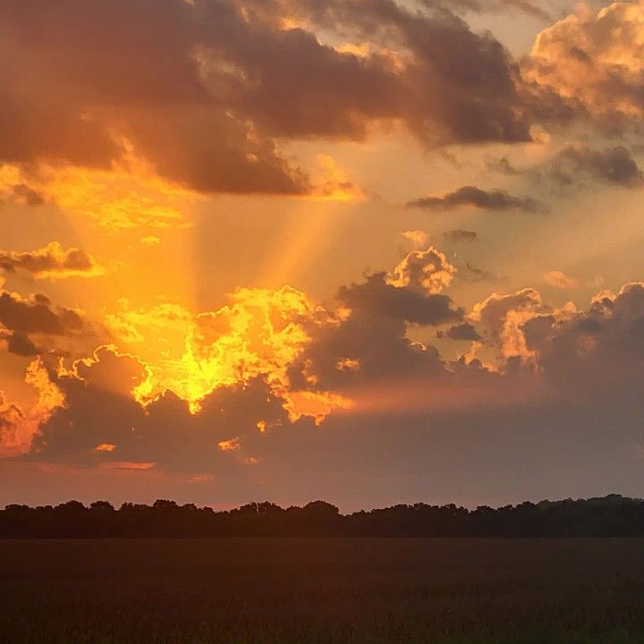
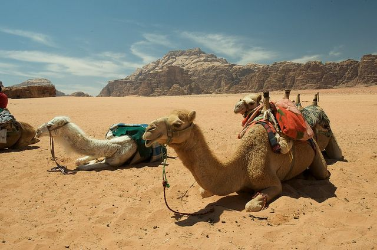

What is Natural Light?
Good lighting is important for creating a great image. It affects brightness, mood, and atmosphere. Natural light in photography refers to any source of light that is created by the sun or moon. Natural light is the most basic form of light there is. The quality and amount of light present depends on different variables, most notably the weather and the time of day. Basically, natural light is used to refer to lights that have not been generated by the photographer's equipment in a photo studio
Soft Light
The soft Light, pleasing light that appears right after sunset or just before sunrise creates a serene and flattering effect. Even on cloudy, overcast days, the diffused light can be ideal for photography, as it minimizes harsh shadows and highlights, offering a gentle, even illumination that works beautifully for subjects.


Golden Hour
The golden hour, also known as the "magic hour," occurs shortly after sunrise and
before sunset, when the sun casts a warm, reddish-pink light. This natural glow creates
dramatic, artistic effects, making it an ideal time for various photography styles like
portraits, landscapes, and weddings. Unlike other times of the day that may require extra
lighting gear to achieve optimal color, saturation, and exposure, the golden hour naturally
provides these qualities, minimizing the need for additional equipment.
High Noon
Midday or high noon lighting often creates flat and harsh photos due to undiffused light,
which many photographers try to avoid. This type of lighting can make outdoor images less
appealing by emphasizing shadows and reducing depth. However, it can be advantageous for
capturing reflective surfaces like water or glass. At noon, sunlight penetrates water more
directly, reducing unwanted reflections and enhancing transparency, which is difficult to
achieve during other times of the day when light reflects from various angles.


Afternoon and Mid-Morning
The golden hour, also known as the "magic hour," occurs shortly after sunrise and
before sunset, when the sun casts a warm, reddish-pink light. This natural glow creates
dramatic, artistic effects, making it an ideal time for various photography styles like
portraits, landscapes, and weddings. Unlike other times of the day that may require extra
lighting gear to achieve optimal color, saturation, and exposure, the golden hour naturally
provides these qualities, minimizing the need for additional equipment.
Blue Hour
The blue hour, also known as dawn, dusk, or twilight, is the brief period before sunrise
and after sunset when the sky has a cool pastel hue. During this time, contrast is low, and
the sun's rays are still below the horizon, creating subdued, soft light. This magical moment
only lasts a few minutes, requiring quick action to capture its beauty. However, the light can
sometimes appear overly blue, so photographers often use warm filter gels or the tungsten white
balance setting to neutralize the effect and achieve a more balanced tone.


Night Time
Night photography poses unique challenges due to the absence of sunlight, but customizable
camera settings make it possible to capture stunning images, such as cityscapes and starry skies,
often using long exposures. Additionally, nighttime offers creative opportunities for dramatic
portraits and glamour shots by allowing photographers to select and control their light sources—like
car lights, street lamps, or external flashes—to shape the mood and direct how light falls on their
subject.
Consider how different types of light influence your
photos and seek lighting that complements your intended
message. If a particular light source isn't working,
adapt by turning off overhead lights, using natural window
light, or rescheduling your shot to a time when the sun
offers softer illumination, such as during golden hour.
For portraits or selfies, opt for overcast days or times
when the sun is near the horizon to achieve soft, flattering
lighting. Indoors, position yourself or your subject to face
a window for natural, evenly distributed light that enhances
the subject's features.
Challenge yourself to see colors as more than just what meets the eye. In photography, colors are powerful tools
that can shape emotions, set the mood, and tell stories without words. By learning how to use color effectively,
you can transform your photos from simple snapshots into captivating works of art. Dive into the world of color
theory and discover how to use colors to evoke feelings, create atmosphere, and connect with viewers on a deeper
level. Let this journey inspire you to push your creative boundaries and explore the true potential of color in
photography.